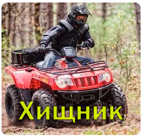

Хищник

209.000 рублей
Квадроцикл "Хищник" – это мощное и агрессивное транспортное средство,
разработанное для любителей экстремальных приключений и высокой проходимости.
Он обладает непревзойденной способностью преодолевать самые
сложные условия и становится надежным компаньоном в самых экстремальных условиях.
Основные характеристики "Хищника" включают:
Мощный двигатель: "Хищник" оснащен высокоэффективным двигателем, предоставляющим огромную мощность
и выдающуюся динамику, что делает его идеальным для спортивных приключений.
Проходимость: С четырьмя крупными колесами и передовой подвеской, "Хищник"
способен преодолевать грязь, песок, камни и снег, позволяя исследовать даже самые неприступные территории.
Устойчивость: Продуманный дизайн и низкий центр тяжести обеспечивают
устойчивость при высокой скорости и в сложных условиях.
Удобство вождения: Эргономичное сиденье и интуитивное управление позволяют водителю
чувствовать себя комфортно во время долгих поездок.
Безопасность: Системы безопасности, включая мощные тормоза и системы стабилизации,
обеспечивают защиту водителя и пассажиров.
Дизайн: "Хищник" имеет агрессивный и современный дизайн, который подчеркивает
его спортивный характер и привлекательность.
Квадроцикл "Хищник" создан для тех, кто ищет адреналин и готов покорять самые суровые места.
Этот мощный и надежный квадроцикл будет вашим верным спутником в мире
экстремальных приключений.